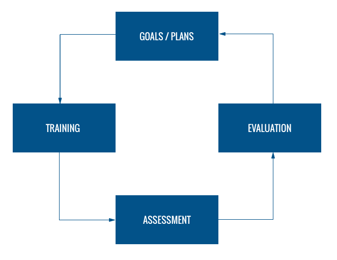
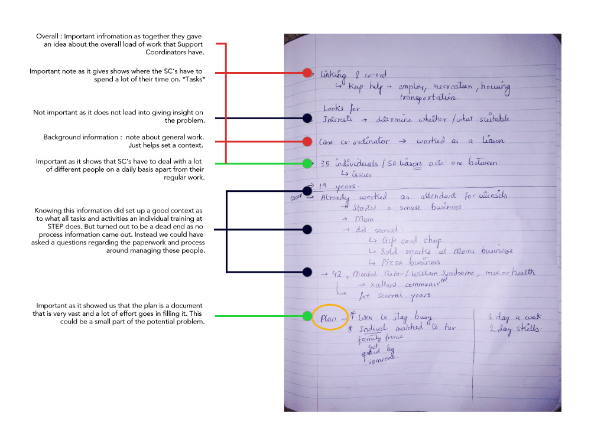
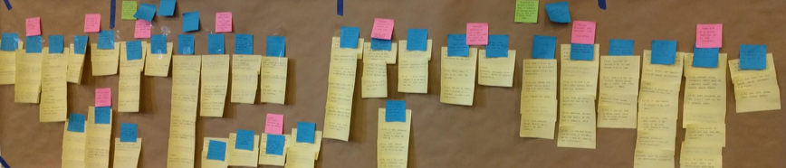
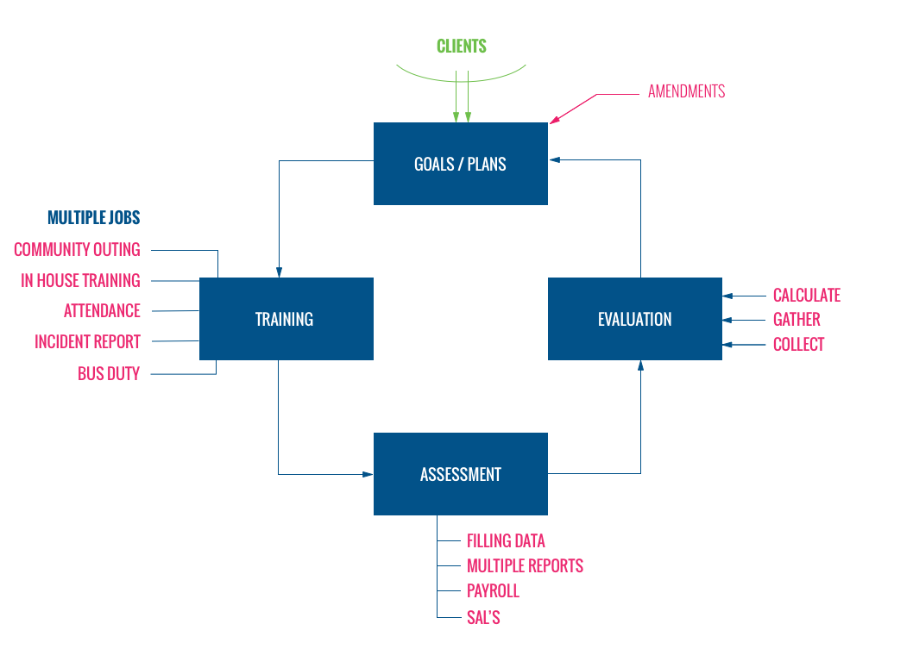
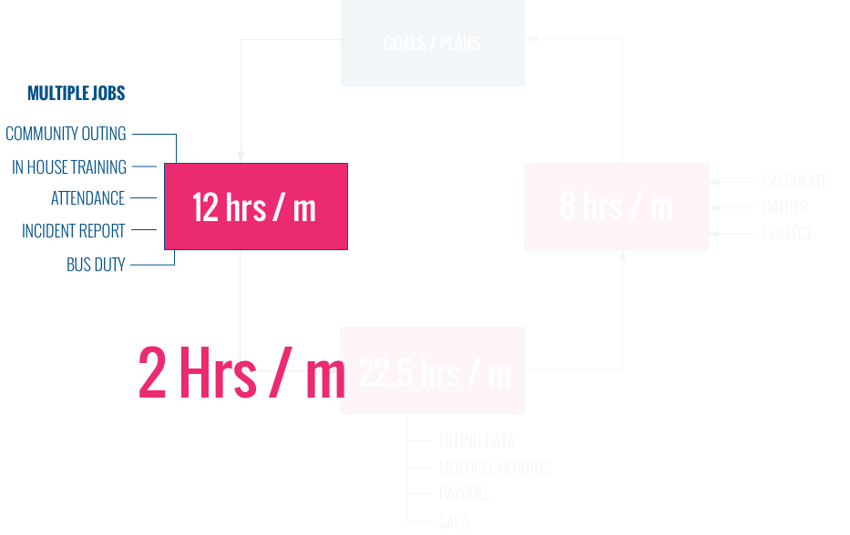
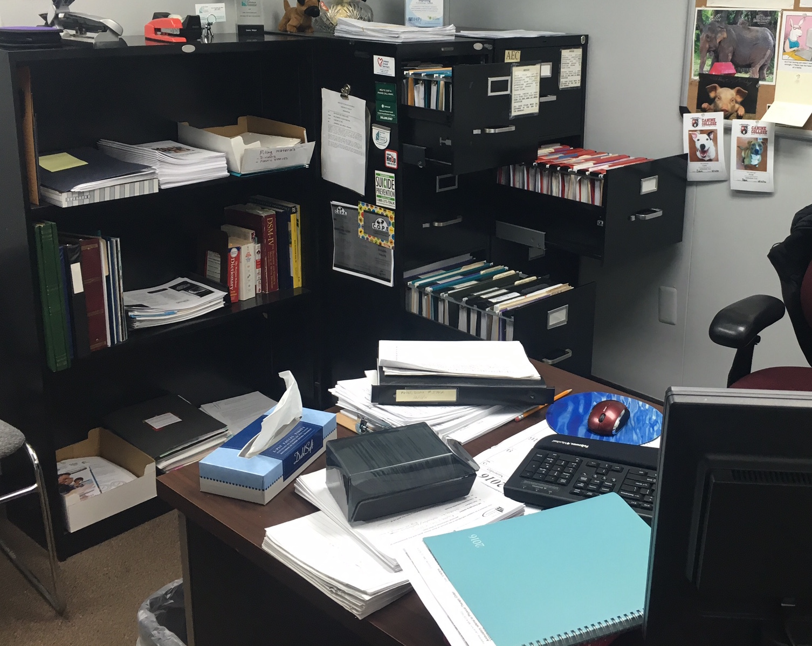
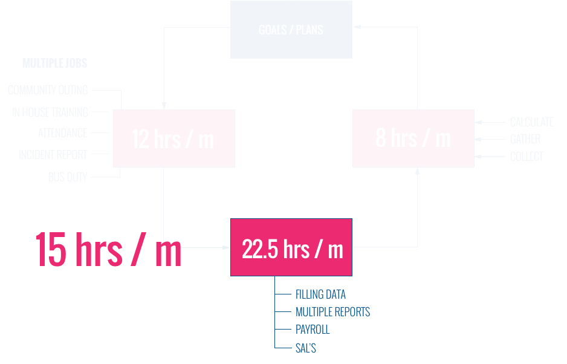
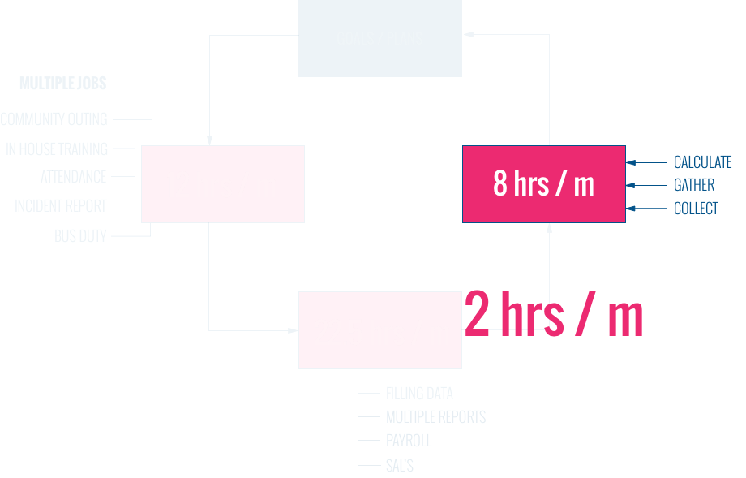
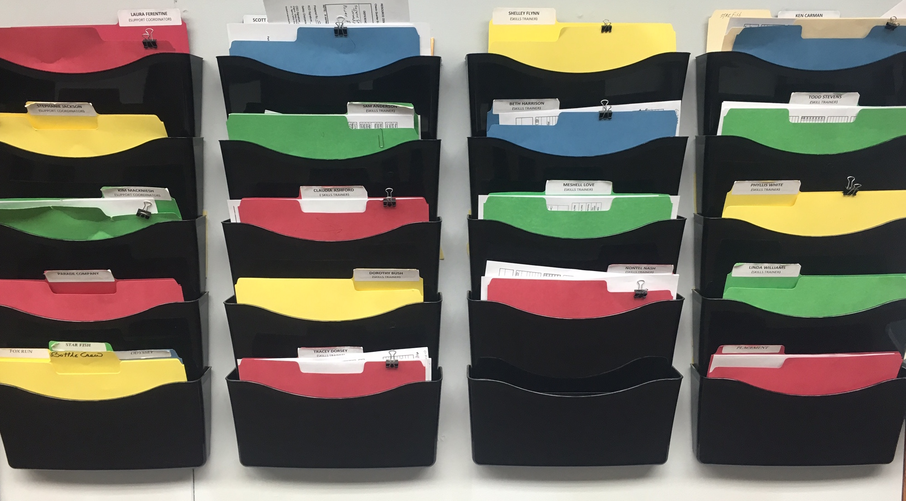

*As a request from our client, I have omitted confidential information including recommendations, visual material, and the final report from this piece. Please reach out to me directly for these artifacts.*
Our client is a non-profit organization in Michigan that offers supported employment opportunities to individuals with cognitive disabilities. In a nutshell, the clients are trained for skills needed to find and sustain a job in the real world. This organization approached us with a simple problem: to improve the current evaluation process for gauging the progress in training achieved by their clients. However, after in-depth contextual inquiry conducted over a period of 3 months, we discovered a larger deep-rooted problem in their information flow, and proposed concrete recommendations to overcome it.
What did the client want?
We kicked off the process by setting up a meeting with the director of the non-profit to understand the current processes in play and delve into the intricacies of the evaluation process that they wished to improve. We collected valuable information from this meeting and were able to delineate a high-level information flow for a client’s journey in the non-profit.
When a client initially walks in, the management and trainers work with the client to assess employment needs, and outline goals and objectives needed to attain these needs. The next phase is the training phase, where the trainers actually work with the client in developing different skills needed to achieve the previously defined goals. This assessment phase goes hand-in-hand with the training phase, where the trainers note down the daily progress of every client. The final phase is the evaluation phase at the end of the month, where the trainers calculate the all-inclusive monthly progress of clients to assess whether it aligns with the goals charted in the initial phase.
Background Research
The next step in our process was to dig deeper into the services offered by them and the nature of the the clients that they cater to. Since this was a particularly diverse domain, we divided the effort within the team. The main objectives of this background research were to understand:
- expectations that differently-abled clients may have from such an organization
- physical, emotional and behavioral characteristics of the clients to be thoroughly prepared while interacting with them, owing to the delicate nature of their disabilities
- strengths and weaknesses of similar evaluation processes being researched and implemented.
Interviews - Round 1
Armed with the extensive background research, we drafted out an interview protocol and conducted field study at the non-profit. The primary objective was to understand the high-level processes that we had outlined from the perspectives of different employees in order to look for potential improvements. We interviewed 4 employees: 1 working in upper level management, 1 in mid level management and 2 field trainers. In addition to interviews, we even took a look around the workspaces and observed the trainers in the field, actually performing their tasks. Later, we annotated our interview notes to uncover insights that might have been overlooked in 1:1 interviews.
Interviews - Round 2
The outcome of the first round of field study was that the problem statement that the non-profit initially proposed was not actually a problem, per se. The current evaluation rubric implemented was standardized and the employees were satisfied with it and found it to be effective and useful.
However, we discovered that there was a recurring delay in information flow within the organizational hierarchy. We thought this was a more significant problem and tackling this would be more impactful for the organization. Thus, we decided to re-define our problem statement and conduct a second round of interviews to dig deeper into this delay in information flow. We re-designed our interview protocol with a view to probe and unearth potential sources involving time-intensive work and their collective effect on the delay in the overall process. The high-level objectives of the second round of interviews were to understand:
- Primary and additional responsibilities of trainers
- How trainers communicated with each other and upper management
- How trainer collected, stored, and analyzed data
Affinity Wall
We then proceeded to create an affinity wall based upon both the rounds of interviews conducted. The objective was to organize the data collected during field work and divide it into logical groups which would in turn help us find patterns between the data points we collected during observations.
We discovered that there were several obstacles in the three stages of training, assessment and evaluation which were causing the information delay in the workflow. The crux of the delay was that the trainers were overburdened with additional work, apart from their primary responsibility of training. Also, there was data redundancy and manual effort required that took up a significant time of the trainers. Being highly motivated to help the clients achieve their goals, trainers took upon this additional work as well, but this caused a delay in submitting the client evaluation each month.
To ensure that our client understood the issue, we leveraged actual statistics in the form of hours spent per trainer per month. We isolated each stage and calculated the time spent on additional work by a trainer each month in each stage. We also proposed techniques to reduce this extra effort and presented our recommendations in the form of time that can be potentially saved per client per month.
Finding 1 - Training Phase
At the end of the training every day, trainers have to log the work done by the clients in the form of work hours and assessing progress to see how far are they from achieving their goal for that month. The complexity lies in the redundancy of data reporting which involves manually filling multiple sheets per client per day per training. We provided recommendations that would help save up to 2 hours/ month in this phase.
There is too much work!
Finding 2 - Assessment Phase
Apart from these core responsibilities of the training, trainers also shoulder peripheral responsibilities of tracking attendance, bus duty, community outings, and filling out incident reports that take up a significant portion of their time. Also, we found that attendance is tracked manually, which was even more time-consuming. We provided recommendations that would help save up to 2 hours/ month in this phase.
 The technology doesn’t support information input instead hinders it
Signing a document requires printing, signing it, and then scanning it. It is difficult to scan and upload multiple documents.
Finding 3 - Evaluation Phase
Trainers had to compute 2 important tasks at the end of each month. The first is aggregating the daily progress of clients to evaluate the monthly progress and check if it aligned with the goals set. The second is calculating the work hours hours spent by client / month for payroll. However, in spite of having this data in excel sheets, both these computations are performed manually, which is extremely time-consuming. We provided recommendations that would help save up to 2 hours/ month in this phase.
Finding 4 - Communication Standards
There is no standard communication and sharing medium that is used by the trainers and upper management. While email is supposed to be the primary way of communication, physical mailboxes, shared drives and personal meetings are other forms that are also being used for communication as well as for exchange of documents. This has led to data being fragmented across these channels. Also, there is no standard naming convention for documents. This makes it extremely difficult to find the required data, and adds to the time delay at the end of every month.
Impact
We made 2 sets of suggestions - the first being simple and quick fixes they could use to improve their efficiency by a small factor, and the second which involved bigger technological changes and improved their efficiency by 115%, saving upto 22 hours per month and it could be incorporated in their technological overhaul they were planning in the next 6 months.
Here is some feedback that our team received from the director of the organization:
They were wonderful to work with and their report was terrific! Their perspective and expertise in information flow/time usage provided some real insight into how we can better use some staff time.